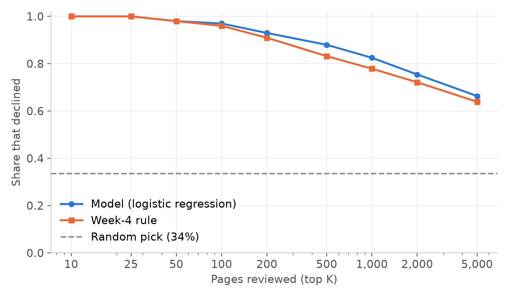
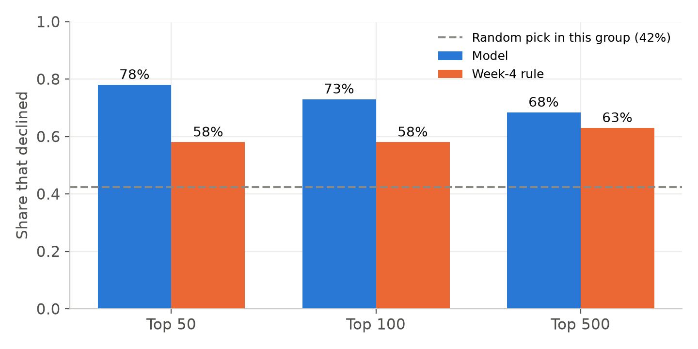
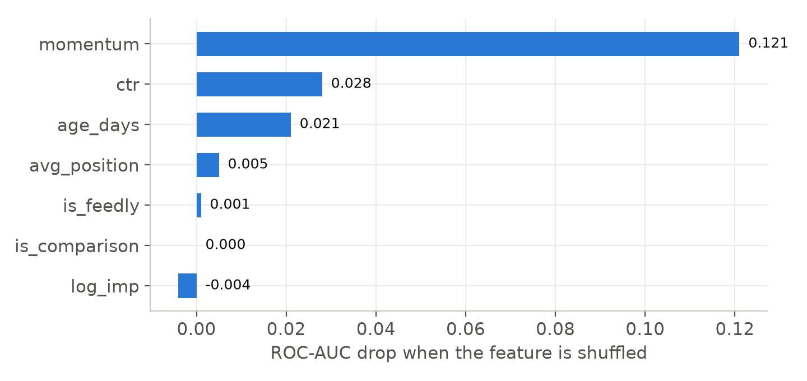
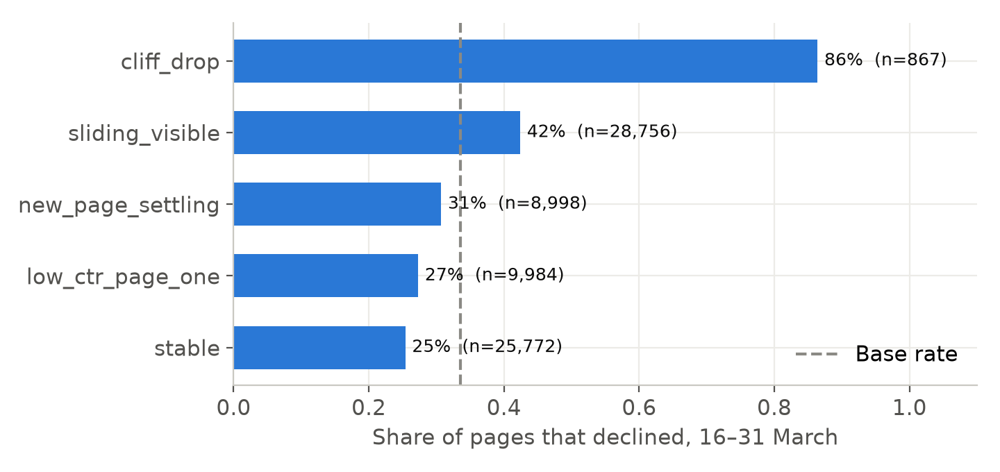

Which content pages will lose search visibility next? A ranked review queue on real search data
Abstract
FlyRank researches, writes and publishes content into its clients' websites and then watches how that content performs in search; published pages slowly decay, and the decision that matters is which of thousands of pages a person should look at first, so this study asks which pages will lose Google impressions in the next 16 days. I used one month of real Search Console data from the FlyRank ML Internship warehouse (74,377 pages from 36 clients, decision moment 16 March 2026) and labelled a page as declining when its daily impressions in 16–31 March fell below 80% of its 1–15 March level (base rate 34%). A frozen rule (“already sliding × traffic”) was compared with a logistic regression on seven features known on 16 March, with 5-fold cross-validation grouped by client so every score comes from a model that never saw that client, plus a deliberate-leak check. Both methods find almost only real declines at the very top of the list (98% of the top 50, against 34% for a random pick), but the model ranks better overall (ROC-AUC 0.658 vs 0.633) and clearly better among pages that are only starting to slide (78% vs 58% of the top 50). For FlyRank's content work, the output is decision support, not a forecast of Google: a weekly review queue with reason codes, three action lanes, a no-go list and explicit limits (one month, associations only).
1. Introduction: the Monday problem
The case: FlyRank's content. FlyRank runs content as infrastructure: it researches and writes articles, publishes them straight into client websites, then follows their Google Search Console data and keeps optimizing them. Pages that rank do not stay there; positions slip, impressions and clicks fall, and with many clients and many thousands of pages, a decline is easy to notice too late. FlyRank's product already flags pages with hand-written rules (thresholds chosen by people). This paper asks the question behind those flags with real data: can a ranking learned from early signals beat a simple rule at telling a person which page to fix first? Product flags were never used as inputs, only the raw search data.
It is Monday morning. An editor has a few hours for maintenance and thousands of published pages across many client sites. Some of them are about to lose a big part of their search visibility; most are fine. Without a list, the editor checks whatever they remember, or nothing.
This work builds that list. The goal is not to explain why Google ranks pages the way it does, but to put the pages most likely to decline at the top, with a reason a person can check in a minute and a suggested action. A false alarm costs about twenty minutes of review; a missed decline can cost weeks of lost traffic before anyone notices.
The tension: the obvious rule, “look at pages that are already dropping”, is very hard to beat at the top of the list, because a page that collapsed rarely bounces back within two weeks. The interesting question is whether a model adds anything beyond that, and where.
2. Data
The data is the FlyRank ML Internship warehouse on Hugging Face, read with DuckDB directly from Parquet. Two tables are used: the daily content-performance fact table (one row per page per day: Search Console impressions, clicks and average position) and the content dimension (page type and creation date).
The March 2026 partition has 9,841,378 daily rows covering 55 clients and 331,437 pages. Three filters define the study frame:
- only rows with Search Console data, because the label is built from impressions;
- at least 100 impressions in 1–15 March, so a 20% drop is not just noise;
- pages created before 1 March, so every page has a full first half of the month.
That leaves 74,377 pages from 36 clients. Clients and pages are pseudonymous hashes, used only to group the validation, never as features. No client names, URLs or search queries appear anywhere in this paper or the repository. One client contributes 24% of the pages and the three largest 56%, which matters for validation (section 3). Almost all pages are keyword articles (73,308); comparison and news-feed articles are a small minority.
3. Methodology
Label
A page is declining if its average daily impressions on 16–31 March are below 80% of its average daily impressions on 1–15 March. 34% of pages meet this definition; this base rate is shown next to every precision number below.
Features (all known on 16 March)
| Feature | Meaning |
|---|---|
momentum | log ratio of daily impressions in 8–15 March vs 1–7 March: is the page already sliding? |
log_imp | log of impressions per day: how visible the page is |
ctr | clicks divided by impressions |
avg_position | impression-weighted average Google position |
age_days | days since the page was created |
is_feedly, is_comparison | content type flags |
Left out on purpose: client and page ids, everything from 16–31 March, and any trend or “direction” field precomputed in the warehouse, because those overlap the label window.
Baseline
The week-4 rule, frozen before any model was trained: score = −momentum × log(1 + impressions per day) when momentum is below −0.1, otherwise 0. It needs no training, so it cannot overfit, and it is the bar any model has to clear.
Model
A standardized logistic regression on the seven features. Gradient boosting was also tried; it was not clearly better (table below) and is harder to explain to an editor, so the simpler model was kept.
Validation design
Five-fold cross-validation grouped by client: every test fold contains only clients that were not in training, which is the situation of a new client. All scores in this paper are out-of-fold. The same model under a random page-level split reads ROC-AUC 0.697 instead of 0.658: pages of the same client share trends, so a random split partly measures memory of the client. The grouped number is the one reported.
Leakage checks
Every feature was traced to the 1–15 March window. As a check of the check, a deliberately leaky feature built from the label window was added: ROC-AUC jumped to 1.000, exactly what a leak looks like, and the feature was removed. The honest model scores far below that, as it should.
4. Results
| Method | ROC-AUC | P@50 | P@500 | P@1,000 | P@5,000 |
|---|---|---|---|---|---|
| Logistic regression (model) | 0.658 | 98% | 88% | 82% | 66% |
| Week-4 rule (baseline) | 0.633 | 98% | 83% | 78% | 64% |
| Gradient boosting (tried) | 0.662 | 90% | 85% | 80% | 66% |
| Random pick (base rate) | 0.500 | 34% | 34% | 34% | 34% |
Out-of-fold, grouped by client, 74,377 pages. P@K = share of the top-K ranked pages that actually declined. Per-fold ROC-AUC spread (standard deviation) is about 0.05 for the model.

The top of the list is a tie: 98% of the top 50 declined for both methods. That is the “down stays down” effect. The real test is the next tier, pages that are sliding but have not collapsed, because that is where an editor decides on a refresh. In that group (28,756 pages, base rate 42%) the model's choices declined clearly more often:
| Refresh group, top K | Model | Week-4 rule | Random pick |
|---|---|---|---|
| Top 50 | 78% | 58% | 42% |
| Top 100 | 73% | 58% | 42% |
| Top 500 | 68% | 63% | 42% |


Error analysis. Of the model's top 500 pages, 60 did not decline. Almost all of them had a sharp drop in the second week of March and then recovered: pages where one quiet week looked like a collapse. This is why the playbook below sends sharp drops to a quick technical check rather than straight to a rewrite.
5. Limitations and honest framing
- One month. Everything is March 2026. There was no second month to use as a sealed test, so stability over time is unmeasured. Seasonality or a search-engine update can move the base rate and the ranking quality.
- Associations, not causes. Nothing here shows that refreshing a page causes recovery; no refresh was observed in the data. The features predict a drop; they do not explain it.
- The easy top. The highest precision numbers come from pages that had already collapsed. The fair measures are the refresh-group comparison and ROC-AUC, and those are modest (≈0.66).
- The label is impressions. It ignores clicks, conversions and whether the page still matters to the business.
- Few, uneven clients. 36 clients, one of them 24% of the pages; per-fold ROC-AUC varies by about ±0.05.
- Not calibrated. The score ranks pages; it should not be read as the probability for one page.
- Possible tracking artefacts. 131 pages had zero impressions after 16 March and are counted as declining; some may be de-indexing or tracking problems rather than decay.
6. Ranked recommendations: the weekly playbook
Each page gets one archetype, checked in order, and each archetype has one action. Each action is its own lane, sorted by the model score, so a weekly review takes the top of each lane rather than the top of one list (which would be all collapses).
| # | Lane | Which pages | Action | Per week |
|---|---|---|---|---|
| 1 | Technical check | daily impressions fell below ~22% within a week (867 pages, 86% declined) | check indexing, redirects and tracking before touching content | top 20, ~5 min each |
| 2 | Refresh review | already sliding (momentum < −0.1) (28,756 pages, 42% declined) | open the page, decide on a content refresh | top 30, ~20 min each |
| 3 | Snippet fix | page-one position but CTR below the page-one median | rewrite title and meta description | top 10 |
| 4 | Wait / monitor | pages younger than 45 days, and everything else | no action this week | — |

On March data, the refresh lane's top 30 had 83% real declines against 42% for that lane at random. All three lanes together are about 13 hours of review per week.
Human review and no-go list
- A person confirms every drop in Search Console before acting, and checks whether a whole client dropped at once (a site-wide cause, not many separate jobs).
- Never auto-edit, unpublish, redirect or delete pages from this score.
- Never use the score to judge writers, editors or clients, and never present it as predicting Google.
- Retrain or pause when the base rate moves by more than 10 points, the momentum distribution shifts, the top-50 precision on a new month falls below the rule's, or the label definition changes; retrain monthly regardless.
7. Reproducibility
- Repository: github.com/h0pi/flyrank-ml-intenrship
- Capstone notebook (every number and chart on this page): work/notebooks/capstone.ipynb
- Earlier steps: data contract · baseline · model · validation & leakage audit · action playbook
- Metrics behind this page: work/outputs/capstone_metrics.json; the page is generated from it by work/paper/build_paper.py.
- To rerun: open the capstone notebook in Colab or Jupyter with a Hugging Face read token (
HF_TOKEN), run all (it caches the March slice towork/outputs/), then runpython work/paper/build_paper.py. Seed 42, scikit-learn 1.9.1.
8. Acknowledgments & data credit
Built on the FlyRank ML Internship dataset. Thanks to the FlyRank team for the warehouse, the weekly assignments and the review of this work. All client and page identifiers in the data are pseudonymous; no private data is published here.